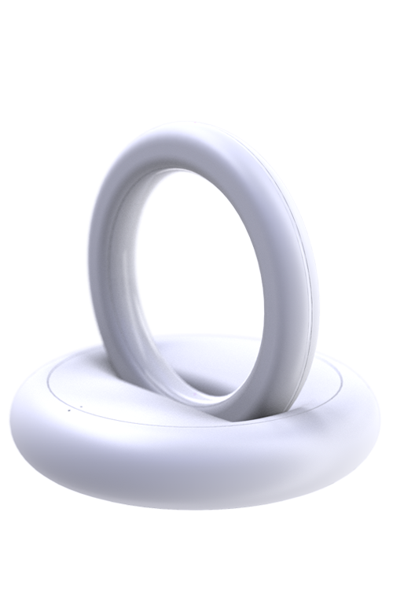

Fot
Fot는 업무중인 재택근무자들에게 리프레시를
제공하는 새로운 경험의 가전제품입니다.

Home office becomes a new everyday life
재택근무의 가장 큰 특징은 업무공간과 사적공간의 명확한 분리가
어렵다는 점입니다. 그들은 출퇴근 하는데 5초가 걸리고 침대
바로 옆에서 업무를 보고있죠
업무의 집중과 휴식을,
집 안에서 업무의 맺고 끊음이 어려운 재택근무자들은 상당한 피로감을
느끼고 있죠. 그들에게 휴식의 순간을 제공하여 업무의 집중도를 높일
수 있는 새로운 경험을 제공합니다.

Product 1
Editor
Remote controller